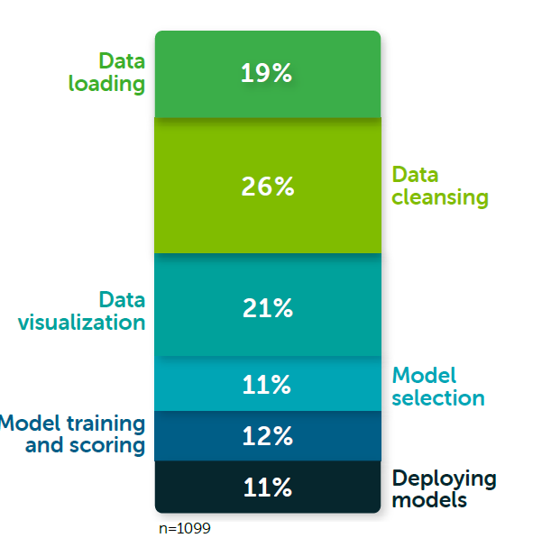

<div class="initial-content">
  <div id="main" role="main">

  <article class="page has-sidebar" itemscope itemtype="https://schema.org/CreativeWork">
    <meta itemprop="headline" content="League of Legends Optimizer using Oracle Cloud Infrastructure—Building an Adversarial League of Legends AI Model">
    
    <meta itemprop="datePublished" content="2022-01-07T07:00:00+00:00">
    


    <header>
      <h1 id="page-title" class="page__title" itemprop="headline">League of Legends Optimizer using Oracle Cloud Infrastructure—Building an Adversarial League of Legends AI Model
</h1>
      


    </header>

    <section class="page__content" itemprop="text">
      

        <h2 id="recap-and-introduction">Recap and Introduction</h2>
<p>Welcome to the third article of the League of Legends Optimizer series!</p>

<p>In this article, we’re diving deep into building a classifier model to predict the winner of two champion matchups withs Oracle Cloud Infrastructure (OCI).</p>

<p>In previous articles, we’ve done the following:</p>

<ul class="task-list">
  <li class="task-list-item"><input type="checkbox" class="task-list-item-checkbox" disabled="disabled" checked="checked" />Defined and modelled our problem, understanding the different steps in the drafting phase of the game</li>
  <li class="task-list-item"><input type="checkbox" class="task-list-item-checkbox" disabled="disabled" checked="checked" />Explored the various endpoints offered by Riot Games in their official API</li>
  <li class="task-list-item"><input type="checkbox" class="task-list-item-checkbox" disabled="disabled" checked="checked" />Pulled data from the most skilled players around the world and built a data set of these players, which left us with a structure like this in our non-relational autonomous database</li>
  <li class="task-list-item"><input type="checkbox" class="task-list-item-checkbox" disabled="disabled" checked="checked" />Created data structures, such as the <em>matchup</em> structure, to represent the data we pulled from the API in an adversarial way: in this data structure (see <a href="https://www.kaggle.com/jasperan/league-of-legends-1v1-matchups-results">this dataset</a>), we faced each lane in a game against the enemy’s, and determined whether this player won or lost the game.</li>
</ul>

<p>Following this data structure, we’re going to make a reliable model that can predict the best champion to pick against another player using by using machine learning.</p>

<h2 id="the-data-structure">The Data Structure</h2>

<p>From the <a href="https://www.kaggle.com/jasperan/league-of-legends-1v1-matchups-results">Kaggle dataset</a>, we see an example of the data structure we’re going to use to build our model:</p>

<div class="language-json highlighter-rouge"><div class="highlight"><pre class="highlight"><code><span class="p">{</span><span class="w">
    </span><span class="nl">"p_match_id"</span><span class="p">:</span><span class="w"> </span><span class="s2">"BR1_2133948485_bottom"</span><span class="p">,</span><span class="w">
    </span><span class="nl">"data"</span><span class="p">:</span><span class="w"> </span><span class="p">[</span><span class="w">
        </span><span class="p">{</span><span class="w">
            </span><span class="nl">"goldEarned"</span><span class="p">:</span><span class="w"> </span><span class="mi">10767</span><span class="p">,</span><span class="w">
            </span><span class="nl">"totalMinionsKilled"</span><span class="p">:</span><span class="w"> </span><span class="mi">161</span><span class="p">,</span><span class="w">
            </span><span class="nl">"win"</span><span class="p">:</span><span class="w"> </span><span class="kc">false</span><span class="p">,</span><span class="w">
            </span><span class="nl">"kills"</span><span class="p">:</span><span class="w"> </span><span class="mi">6</span><span class="p">,</span><span class="w">
            </span><span class="nl">"assists"</span><span class="p">:</span><span class="w"> </span><span class="mi">8</span><span class="p">,</span><span class="w">
            </span><span class="nl">"deaths"</span><span class="p">:</span><span class="w"> </span><span class="mi">6</span><span class="p">,</span><span class="w">
            </span><span class="nl">"champion"</span><span class="p">:</span><span class="w"> </span><span class="s2">"Kayle"</span><span class="p">,</span><span class="w">
            </span><span class="nl">"visionScore"</span><span class="p">:</span><span class="w"> </span><span class="mi">14</span><span class="p">,</span><span class="w">
            </span><span class="nl">"puuid"</span><span class="p">:</span><span class="w"> </span><span class="s2">"s1j7_icmqQCl1vROjASKJLSGZmktnvcrt8Qm7g39T16YdxE-xTlX2nnrG400bMae7O3JWyf2Y4XX4Q"</span><span class="p">,</span><span class="w">
            </span><span class="nl">"totalDamageDealtToChampions"</span><span class="p">:</span><span class="w"> </span><span class="mi">13008</span><span class="p">,</span><span class="w">
            </span><span class="nl">"summonerName"</span><span class="p">:</span><span class="w"> </span><span class="s2">"EveBy"</span><span class="w">
        </span><span class="p">},</span><span class="w">
        </span><span class="p">{</span><span class="w">
            </span><span class="nl">"goldEarned"</span><span class="p">:</span><span class="w"> </span><span class="mi">14787</span><span class="p">,</span><span class="w">
            </span><span class="nl">"totalMinionsKilled"</span><span class="p">:</span><span class="w"> </span><span class="mi">172</span><span class="p">,</span><span class="w">
            </span><span class="nl">"win"</span><span class="p">:</span><span class="w"> </span><span class="kc">true</span><span class="p">,</span><span class="w">
            </span><span class="nl">"kills"</span><span class="p">:</span><span class="w"> </span><span class="mi">14</span><span class="p">,</span><span class="w">
            </span><span class="nl">"assists"</span><span class="p">:</span><span class="w"> </span><span class="mi">2</span><span class="p">,</span><span class="w">
            </span><span class="nl">"deaths"</span><span class="p">:</span><span class="w"> </span><span class="mi">6</span><span class="p">,</span><span class="w">
            </span><span class="nl">"champion"</span><span class="p">:</span><span class="w"> </span><span class="s2">"Kaisa"</span><span class="p">,</span><span class="w">
            </span><span class="nl">"visionScore"</span><span class="p">:</span><span class="w"> </span><span class="mi">12</span><span class="p">,</span><span class="w">
            </span><span class="nl">"puuid"</span><span class="p">:</span><span class="w"> </span><span class="s2">"zjBoj6G9dWbPgkKSvZpDIcDA2NG65M1FUOxlYCXUyff9I1GR_xIuOFLWXlzMjWV67gOnGFC7g6wCuw"</span><span class="p">,</span><span class="w">
            </span><span class="nl">"totalDamageDealtToChampions"</span><span class="p">:</span><span class="w"> </span><span class="mi">23071</span><span class="p">,</span><span class="w">
            </span><span class="nl">"summonerName"</span><span class="p">:</span><span class="w"> </span><span class="s2">"Goiasinho"</span><span class="w">
        </span><span class="p">}</span><span class="w">
    </span><span class="p">],</span><span class="w">
    </span><span class="nl">"gameVersion"</span><span class="p">:</span><span class="w"> </span><span class="s2">"10.25.348.1797"</span><span class="w">
</span><span class="p">}</span><span class="w">
</span></code></pre></div></div>

<p>The intricacies of how we built the data structure and derived the result from it are explained in the <a href="https://github.com/oracle-devrel/leagueoflegends-optimizer/blob/main/articles/article2.md">previous article</a>. It is important to remember that structuring and manipulating data in the data science process takes an average of 80 to 90% of the time, according to expert sources (image courtesy of <a href="https://www.anaconda.com/state-of-data-science-2020">“2020 State of Data Science: Moving From Hype Toward Maturity.”</a>), and we shouldn’t be discouraged when spending most of our time processing and manipulating data structures. The ML algorithm is the easy part if you’ve correctly identified the correct data structure and adapted it to the structure ML algorithms expect.</p>

<picture class="">
                <source srcset="assets/lol-3-anaconda_1.png 1x" />
                
            </picture>

<p>For our first model, we’re going to simplify the present data structure even more and get something like this:</p>

<div class="language-json highlighter-rouge"><div class="highlight"><pre class="highlight"><code><span class="p">{</span><span class="w">
    </span><span class="nl">"match_id"</span><span class="p">:</span><span class="w"> </span><span class="s2">"EUN1_2910807891_utility"</span><span class="p">,</span><span class="w">
    </span><span class="nl">"champ1"</span><span class="p">:</span><span class="w"> </span><span class="s2">"Velkoz"</span><span class="p">,</span><span class="w">
    </span><span class="nl">"champ2"</span><span class="p">:</span><span class="w"> </span><span class="s2">"Yuumi"</span><span class="p">,</span><span class="w">
    </span><span class="nl">"win"</span><span class="p">:</span><span class="w"> </span><span class="mi">1</span><span class="w">
</span><span class="p">}</span><span class="w">
</span></code></pre></div></div>

<p>Where <code class="language-plaintext highlighter-rouge">win</code> is a boolean variable that represents whether <code class="language-plaintext highlighter-rouge">champ1</code> won or not. So, in this example, Velkoz won the game.</p>

<p>If we analyze this data structure, we see that it’s very simplistic and only contains three useful variables (having excluded the identifier variable, which is only there to ensure we don’t have duplicate values in our JSON database). One of these variables is actually the result of the game and the feature that we’d like to predict. This can have two different implications:</p>
<ul>
  <li>The model is simple and works because the problem is simple. I suggest always trying this out regardless of the prediction problem and checking if the model is actually able to make accurate predictions.</li>
  <li>The model doesn’t work because we oversimplified the problem and there are many more variables to consider to make improvements on model accuracy. This is most likely the case in many real-world problems, in which I also include our League of Legends Optimizer. So, probably, this initial ML model will not have great predictions. Nonetheless, we’ll try anyway with what we currently have.</li>
</ul>

<h2 id="the-code">The Code</h2>

<p>We begin with simple data exploration of our initial dataset.</p>

<div class="language-python highlighter-rouge"><div class="highlight"><pre class="highlight"><code><span class="kn">import</span> <span class="nn">pandas</span> <span class="k">as</span> <span class="n">pd</span>
<span class="n">pd</span><span class="p">.</span><span class="n">set_option</span><span class="p">(</span><span class="s">'float_format'</span><span class="p">,</span> <span class="s">'{:f}'</span><span class="p">.</span><span class="nb">format</span><span class="p">)</span>
<span class="kn">import</span> <span class="nn">os</span>
<span class="kn">import</span> <span class="nn">seaborn</span> <span class="k">as</span> <span class="n">sns</span>
<span class="kn">import</span> <span class="nn">matplotlib.pyplot</span> <span class="k">as</span> <span class="n">plt</span>
<span class="o">%</span><span class="n">matplotlib</span> <span class="n">inline</span>

<span class="kn">from</span> <span class="nn">sklearn.preprocessing</span> <span class="kn">import</span> <span class="n">LabelEncoder</span>
<span class="kn">from</span> <span class="nn">sklearn.preprocessing</span> <span class="kn">import</span> <span class="n">StandardScaler</span> 
<span class="kn">from</span> <span class="nn">sklearn.linear_model</span> <span class="kn">import</span> <span class="n">LogisticRegression</span>
<span class="kn">from</span> <span class="nn">sklearn.preprocessing</span> <span class="kn">import</span> <span class="n">StandardScaler</span>
<span class="kn">from</span> <span class="nn">sklearn.linear_model</span> <span class="kn">import</span> <span class="n">LogisticRegression</span>

<span class="n">df</span> <span class="o">=</span> <span class="n">pd</span><span class="p">.</span><span class="n">read_json</span><span class="p">(</span><span class="s">'data_location.json'</span><span class="p">)</span> <span class="c1"># we've stored the data file locally in this case
</span><span class="n">df</span><span class="p">.</span><span class="n">head</span><span class="p">(</span><span class="mi">5</span><span class="p">)</span>
</code></pre></div></div>

<table>
  <thead>
    <tr>
      <th style="text-align: center">match_id</th>
      <th style="text-align: center">champ1</th>
      <th style="text-align: center">champ2</th>
      <th style="text-align: center">win</th>
    </tr>
  </thead>
  <tbody>
    <tr>
      <td style="text-align: center">EUN1_2910807891_utility</td>
      <td style="text-align: center">Velkoz</td>
      <td style="text-align: center">Yuumi</td>
      <td style="text-align: center">1</td>
    </tr>
    <tr>
      <td style="text-align: center">EUN1_2910807891_jungle</td>
      <td style="text-align: center">Shaco</td>
      <td style="text-align: center">Nidalee</td>
      <td style="text-align: center">1</td>
    </tr>
    <tr>
      <td style="text-align: center">EUN1_2909987530_top</td>
      <td style="text-align: center">Riven</td>
      <td style="text-align: center">Sett</td>
      <td style="text-align: center">0</td>
    </tr>
    <tr>
      <td style="text-align: center">EUN1_2909987530_middle</td>
      <td style="text-align: center">Lissandra</td>
      <td style="text-align: center">Kassadin</td>
      <td style="text-align: center">0</td>
    </tr>
    <tr>
      <td style="text-align: center">EUN1_2909987530_bottom</td>
      <td style="text-align: center">Ashe</td>
      <td style="text-align: center">Ezreal</td>
      <td style="text-align: center">0</td>
    </tr>
  </tbody>
</table>

<p>In this simple model, there is almost no need for data exploration since we fully understand what each variable means, as they are by-products of our initial data structure.</p>

<p>We split our data into train-test sets:</p>

<div class="language-python highlighter-rouge"><div class="highlight"><pre class="highlight"><code><span class="c1"># We want to predict the 'win' variable.
</span><span class="n">train_features</span> <span class="o">=</span> <span class="n">train_dataset</span><span class="p">.</span><span class="n">copy</span><span class="p">()</span>
<span class="n">test_features</span> <span class="o">=</span> <span class="n">test_dataset</span><span class="p">.</span><span class="n">copy</span><span class="p">()</span>

<span class="n">train_labels</span> <span class="o">=</span> <span class="n">train_features</span><span class="p">.</span><span class="n">pop</span><span class="p">(</span><span class="s">'win'</span><span class="p">)</span> <span class="c1"># returns column 'win'
</span><span class="n">test_labels</span> <span class="o">=</span> <span class="n">test_features</span><span class="p">.</span><span class="n">pop</span><span class="p">(</span><span class="s">'win'</span><span class="p">)</span> <span class="c1"># returns column 'win'
</span></code></pre></div></div>

<p>We encode the data following the Data Science process:</p>

<div class="language-python highlighter-rouge"><div class="highlight"><pre class="highlight"><code><span class="n">le</span> <span class="o">=</span> <span class="n">LabelEncoder</span><span class="p">()</span>

<span class="n">le</span> <span class="o">=</span> <span class="n">le</span><span class="p">.</span><span class="n">fit</span><span class="p">(</span><span class="n">champ_list</span><span class="p">)</span> <span class="c1"># fit the label encoder with the whole champion list.
</span>
<span class="n">train_features</span> <span class="o">=</span> <span class="n">train_features</span><span class="p">.</span><span class="nb">apply</span><span class="p">(</span><span class="k">lambda</span> <span class="n">x</span><span class="p">:</span> <span class="n">le</span><span class="p">.</span><span class="n">transform</span><span class="p">(</span><span class="n">x</span><span class="p">))</span>
<span class="n">test_features</span> <span class="o">=</span> <span class="n">test_features</span><span class="p">.</span><span class="nb">apply</span><span class="p">(</span><span class="k">lambda</span> <span class="n">x</span><span class="p">:</span> <span class="n">le</span><span class="p">.</span><span class="n">transform</span><span class="p">(</span><span class="n">x</span><span class="p">))</span>
</code></pre></div></div>

<p>Note that the <code class="language-plaintext highlighter-rouge">champ_list</code> referenced in this code block is the list of all unique champions in LoL.</p>

<p>We need to fit our label encoder with all possible values. Otherwise, new values will not be properly encoded or may be encoded as a duplicate number.</p>

<div class="language-python highlighter-rouge"><div class="highlight"><pre class="highlight"><code><span class="c1"># Normalization
</span><span class="n">scaler</span> <span class="o">=</span> <span class="n">StandardScaler</span><span class="p">()</span>
<span class="n">train_features</span> <span class="o">=</span> <span class="n">scaler</span><span class="p">.</span><span class="n">fit_transform</span><span class="p">(</span><span class="n">train_features</span><span class="p">)</span>
<span class="n">test_features</span> <span class="o">=</span> <span class="n">scaler</span><span class="p">.</span><span class="n">transform</span><span class="p">(</span><span class="n">test_features</span><span class="p">)</span>
</code></pre></div></div>

<p>After scaling the data we can fit our model:</p>

<div class="language-python highlighter-rouge"><div class="highlight"><pre class="highlight"><code><span class="n">logreg</span> <span class="o">=</span> <span class="n">LogisticRegression</span><span class="p">()</span>
<span class="n">logreg</span><span class="p">.</span><span class="n">fit</span><span class="p">(</span><span class="n">train_features</span><span class="p">,</span> <span class="n">train_labels</span><span class="p">)</span>
<span class="k">print</span><span class="p">(</span><span class="s">'Accuracy of Logistic regression classifier on training set: {:.2f}'</span>
     <span class="p">.</span><span class="nb">format</span><span class="p">(</span><span class="n">logreg</span><span class="p">.</span><span class="n">score</span><span class="p">(</span><span class="n">train_features</span><span class="p">,</span> <span class="n">train_labels</span><span class="p">)))</span>
<span class="k">print</span><span class="p">(</span><span class="s">'Accuracy of Logistic regression classifier on test set: {:.2f}'</span>
     <span class="p">.</span><span class="nb">format</span><span class="p">(</span><span class="n">logreg</span><span class="p">.</span><span class="n">score</span><span class="p">(</span><span class="n">test_features</span><span class="p">,</span> <span class="n">test_labels</span><span class="p">)))</span>
</code></pre></div></div>

<p>The accuracies obtained for the logistic regression classifier are 0.51. This is like tossing a coin. We could be making better assumptions by having a bit of knowledge about the game and champion performances. So our hypothesis saying that this simplistic model would not work correctly is correct. We need to improve our model or add variables to it.</p>

<p>However, we can still make predictions using our model. The code to make a prediction needs to consider new data, encode it and scale it, and then make a prediction:</p>

<div class="language-python highlighter-rouge"><div class="highlight"><pre class="highlight"><code><span class="n">new_data</span> <span class="o">=</span> <span class="p">{</span>
    <span class="s">'champ1'</span><span class="p">:</span> <span class="p">[</span><span class="s">'Xayah'</span><span class="p">,</span> <span class="s">'Karma'</span><span class="p">,</span> <span class="s">'Xerath'</span><span class="p">,</span> <span class="s">'Gragas'</span><span class="p">,</span> <span class="s">'Chogath'</span><span class="p">],</span>
    <span class="s">'champ2'</span><span class="p">:</span> <span class="p">[</span><span class="s">'Tristana'</span><span class="p">,</span> <span class="s">'Lulu'</span><span class="p">,</span> <span class="s">'Syndra'</span><span class="p">,</span> <span class="s">'Sejuani'</span><span class="p">,</span> <span class="s">'Gnar'</span><span class="p">]</span>
<span class="p">}</span>
<span class="n">new_df</span> <span class="o">=</span> <span class="n">pd</span><span class="p">.</span><span class="n">DataFrame</span><span class="p">(</span><span class="n">new_data</span><span class="p">)</span>
</code></pre></div></div>

<p>In this case, as our model is very limited in regards to input variables, we make the following assumption: we’ll calculate a team winning by taking the mode of all lanes’ predictions.</p>

<p>Let’s transform our data:</p>

<div class="language-python highlighter-rouge"><div class="highlight"><pre class="highlight"><code><span class="n">new_df</span> <span class="o">=</span> <span class="n">new_df</span><span class="p">.</span><span class="nb">apply</span><span class="p">(</span><span class="k">lambda</span> <span class="n">x</span><span class="p">:</span> <span class="n">le</span><span class="p">.</span><span class="n">transform</span><span class="p">(</span><span class="n">x</span><span class="p">))</span>

<span class="n">new_df</span><span class="p">.</span><span class="n">tail</span><span class="p">(</span><span class="mi">5</span><span class="p">)</span>
</code></pre></div></div>

<table>
  <thead>
    <tr>
      <th style="text-align: center">champ1</th>
      <th style="text-align: center">champ2</th>
    </tr>
  </thead>
  <tbody>
    <tr>
      <td style="text-align: center">143</td>
      <td style="text-align: center">126</td>
    </tr>
    <tr>
      <td style="text-align: center">52</td>
      <td style="text-align: center">69</td>
    </tr>
    <tr>
      <td style="text-align: center">144</td>
      <td style="text-align: center">119</td>
    </tr>
    <tr>
      <td style="text-align: center">36</td>
      <td style="text-align: center">104</td>
    </tr>
    <tr>
      <td style="text-align: center">19</td>
      <td style="text-align: center">35</td>
    </tr>
  </tbody>
</table>

<p>As we can see, our champion input variables have been properly one-hot encoded. As these are the two only variables we have for our model, applying a standard scaler will not make a difference, since all variables have a standard deviation of 1 between each other (all champions are translated into distinct integer numbers).</p>

<p>If we make the prediction:</p>

<div class="language-python highlighter-rouge"><div class="highlight"><pre class="highlight"><code><span class="n">result</span> <span class="o">=</span> <span class="n">logreg</span><span class="p">.</span><span class="n">predict</span><span class="p">(</span><span class="n">new_df</span><span class="p">)</span>

<span class="k">def</span> <span class="nf">find_winner</span><span class="p">(</span><span class="n">lst</span><span class="p">):</span>
    <span class="k">return</span> <span class="nb">max</span><span class="p">(</span><span class="nb">set</span><span class="p">(</span><span class="n">lst</span><span class="p">),</span> <span class="n">key</span><span class="o">=</span><span class="n">lst</span><span class="p">.</span><span class="n">count</span><span class="p">)</span>

<span class="n">winner_prediction</span> <span class="o">=</span> <span class="n">find_winner</span><span class="p">(</span><span class="n">result</span><span class="p">.</span><span class="n">tolist</span><span class="p">())</span>
</code></pre></div></div>

<blockquote>
  <p>[0 0 0 0 0]</p>
</blockquote>

<p>The results of the prediction indicate the predicted winning team in each case. In this case, it’s predicting <code class="language-plaintext highlighter-rouge">champ2</code> to win in all five cases. This can be a coincidence or not, but it happens to be the correct prediction. In case of having discrepancies, we’d use the <code class="language-plaintext highlighter-rouge">find_winner()</code> function to find the mode of the prediction. Adding this to the ML model actually improves the implicit accuracy of our code, but not of the model itself: we’re simply combining a 51% accuracy ML model with additional statistics to make a better prediction.</p>

<p>We may ask ourselves how we can measure the accuracy of our combined ML-statistics model The problem is <strong>we can’t</strong>, since we have no programming framework able to assist us with this. We’d have to code our own object-oriented programming framework that extends the functionalities of the current Pandas framework, for example. And the time required to do so greatly exceeds the expected results. It’s better we focus our resources, as data scientists, to using the frameworks available to us with our structured data, and  finding a better model by improving the quality of our input data. No need to reinvent the wheel.</p>

<p>Finally, to see the results in a human-readable way, we need to apply the <code class="language-plaintext highlighter-rouge">inverse_transform()</code> function to our still-encoded data:</p>

<div class="language-python highlighter-rouge"><div class="highlight"><pre class="highlight"><code><span class="n">inverse_prediction</span> <span class="o">=</span> <span class="n">new_df</span><span class="p">.</span><span class="nb">apply</span><span class="p">(</span><span class="k">lambda</span> <span class="n">x</span><span class="p">:</span> <span class="n">le</span><span class="p">.</span><span class="n">inverse_transform</span><span class="p">(</span><span class="n">x</span><span class="p">))</span> <span class="c1"># we apply inverse transform
</span>
<span class="k">if</span> <span class="n">winner_prediction</span> <span class="o">==</span> <span class="mi">1</span><span class="p">:</span>
    <span class="k">print</span><span class="p">(</span><span class="s">'Predicted winner is team 1: </span><span class="se">\n</span><span class="s">{}'</span><span class="p">.</span><span class="nb">format</span><span class="p">(</span><span class="nb">str</span><span class="p">(</span><span class="n">inverse_prediction</span><span class="p">[</span><span class="s">'champ1'</span><span class="p">])))</span>
<span class="k">else</span><span class="p">:</span>
     <span class="k">print</span><span class="p">(</span><span class="s">'Predicted winner is team 2: </span><span class="se">\n</span><span class="s">{}'</span><span class="p">.</span><span class="nb">format</span><span class="p">(</span><span class="nb">str</span><span class="p">(</span><span class="n">inverse_prediction</span><span class="p">[</span><span class="s">'champ2'</span><span class="p">])))</span>
</code></pre></div></div>

<p>Now, we can see one prediction per case, totaling 5 cases, and one final team prediction using our <code class="language-plaintext highlighter-rouge">find_winner()</code>:</p>

<div class="language-console highlighter-rouge"><div class="highlight"><pre class="highlight"><code><span class="go">Predicted winner is team 2: 
Tristana
Lulu
Syndra
Sejuani
Gnar
</span></code></pre></div></div>

<h2 id="improving-the-model">Improving the model</h2>

<p>As we’ve seen in practice, the accuracy of our model is not as good as it could be. We can improve it by adding more variables to our model. We’re going to create a model that considers all variables in our <em>matchup</em> data structure, and reduce the complexity of our ML code by using AutoML open-source tools for data exploration and model training.</p>

<div class="language-python highlighter-rouge"><div class="highlight"><pre class="highlight"><code><span class="kn">from</span> <span class="nn">pandas_profiling</span> <span class="kn">import</span> <span class="n">ProfileReport</span>
<span class="n">df</span> <span class="o">=</span> <span class="n">pd</span><span class="p">.</span><span class="n">read_csv</span><span class="p">(</span><span class="s">'matchups.csv'</span><span class="p">)</span>
<span class="n">report</span> <span class="o">=</span> <span class="n">ProfileReport</span><span class="p">(</span><span class="n">df</span><span class="p">)</span>
<span class="n">report</span>
</code></pre></div></div>

<p>This simple code generates a dynamic report that shows the data types, missing values, and other information about the data. We explore the Pearson’s r correlation coefficient between the variables:</p>

<picture class="">
                <source srcset="assets/lol-3-pearson.png 1x" />
                
            </picture>

<p>We proceed to train our model with all variables, taking into consideration that most of the variables in our model are highly correlated. This is especially true for the amount of gold earned with respect to the number of kills and minions killed (which makes sense, as these are two of the actions that give out the most gold in-game). We also see that the vision score highly correlates with the amount of assists a player makes in a game.</p>

<div class="language-python highlighter-rouge"><div class="highlight"><pre class="highlight"><code><span class="kn">from</span> <span class="nn">autogluon.tabular</span> <span class="kn">import</span> <span class="n">TabularPredictor</span><span class="p">,</span> <span class="n">TabularDataset</span>
<span class="c1"># train-test split
</span><span class="n">df</span> <span class="o">=</span> <span class="n">TabularDataset</span><span class="p">(</span><span class="s">'matchups.csv'</span><span class="p">)</span>

<span class="n">train</span> <span class="o">=</span> <span class="n">df</span><span class="p">.</span><span class="n">sample</span><span class="p">(</span><span class="n">frac</span><span class="o">=</span><span class="mf">0.8</span><span class="p">,</span> <span class="n">random_state</span><span class="o">=</span><span class="mi">200</span><span class="p">)</span>
<span class="n">test</span> <span class="o">=</span> <span class="n">df</span><span class="p">.</span><span class="n">drop</span><span class="p">(</span><span class="n">train</span><span class="p">.</span><span class="n">index</span><span class="p">)</span>

<span class="c1"># a simple look into our data
</span><span class="n">df</span><span class="p">.</span><span class="n">head</span><span class="p">(</span><span class="mi">2</span><span class="p">)</span>
</code></pre></div></div>

<table>
  <thead>
    <tr>
      <th style="text-align: center">P_MATCH_ID</th>
      <th style="text-align: center">GOLDEARNED</th>
      <th style="text-align: center">TOTALMINIONSKILLED</th>
      <th style="text-align: center">WIN</th>
      <th style="text-align: center">KILLS</th>
      <th style="text-align: center">ASSISTS</th>
      <th style="text-align: center">DEATHS</th>
      <th style="text-align: center">CHAMPION</th>
      <th style="text-align: center">VISIONSCORE</th>
      <th style="text-align: center">PUUID</th>
      <th style="text-align: center">TOTALDAMAGEDEALTTOCHAMPIONS</th>
      <th style="text-align: center">SUMMONERNAME</th>
      <th style="text-align: center">GAMEVERSION</th>
    </tr>
  </thead>
  <tbody>
    <tr>
      <td style="text-align: center">BR1_2309470512_jungle</td>
      <td style="text-align: center">7670</td>
      <td style="text-align: center">37</td>
      <td style="text-align: center">False</td>
      <td style="text-align: center">4</td>
      <td style="text-align: center">2</td>
      <td style="text-align: center">7</td>
      <td style="text-align: center">Graves</td>
      <td style="text-align: center">23</td>
      <td style="text-align: center">b1ZVlTG630NWh8Hgc7H-_-SErq3E3OkV50XSBuz_uzkIuA…</td>
      <td style="text-align: center">11215</td>
      <td style="text-align: center">tired blessed</td>
      <td style="text-align: center">11.14.385.9967</td>
    </tr>
    <tr>
      <td style="text-align: center">EUN1_2809958230_top</td>
      <td style="text-align: center">11108</td>
      <td style="text-align: center">202</td>
      <td style="text-align: center">False</td>
      <td style="text-align: center">1</td>
      <td style="text-align: center">9</td>
      <td style="text-align: center">8</td>
      <td style="text-align: center">Gwen</td>
      <td style="text-align: center">28</td>
      <td style="text-align: center">19ii6j4OOWmkUaw_yAXhMOhcgUvZaK8M1yVT0I3HwBYQka…</td>
      <td style="text-align: center">17617</td>
      <td style="text-align: center">ozzyDD</td>
      <td style="text-align: center">11.8.370.4668</td>
    </tr>
  </tbody>
</table>

<p>We determine our predicting feature and fit the model:</p>

<div class="language-python highlighter-rouge"><div class="highlight"><pre class="highlight"><code><span class="n">label</span> <span class="o">=</span> <span class="s">'WIN'</span>

<span class="n">save_path</span> <span class="o">=</span> <span class="s">'./trained_models'</span>  <span class="c1"># specifies folder to store trained models
</span><span class="n">predictor</span> <span class="o">=</span> <span class="n">TabularPredictor</span><span class="p">(</span><span class="n">label</span><span class="o">=</span><span class="n">label</span><span class="p">,</span> <span class="n">path</span><span class="o">=</span><span class="n">save_path</span><span class="p">).</span><span class="n">fit</span><span class="p">(</span><span class="n">train</span><span class="p">)</span>
</code></pre></div></div>

<p>We can now make predictions on our test data:</p>

<div class="language-python highlighter-rouge"><div class="highlight"><pre class="highlight"><code><span class="n">y_test</span> <span class="o">=</span> <span class="n">test</span><span class="p">[</span><span class="n">label</span><span class="p">]</span>  <span class="c1"># predict 'WIN'
</span><span class="n">test_data_nolabel</span> <span class="o">=</span> <span class="n">test</span><span class="p">.</span><span class="n">drop</span><span class="p">(</span><span class="n">columns</span><span class="o">=</span><span class="p">[</span><span class="n">label</span><span class="p">])</span> 
<span class="n">test_data_nolabel</span><span class="p">.</span><span class="n">head</span><span class="p">()</span>

<span class="n">predictor</span> <span class="o">=</span> <span class="n">TabularPredictor</span><span class="p">.</span><span class="n">load</span><span class="p">(</span><span class="n">save_path</span><span class="p">)</span>
<span class="n">y_pred</span> <span class="o">=</span> <span class="n">predictor</span><span class="p">.</span><span class="n">predict</span><span class="p">(</span><span class="n">test_data_nolabel</span><span class="p">)</span>
<span class="k">print</span><span class="p">(</span><span class="s">"Predictions:  </span><span class="se">\n</span><span class="s">"</span><span class="p">,</span> <span class="n">y_pred</span><span class="p">)</span>
<span class="n">perf</span> <span class="o">=</span> <span class="n">predictor</span><span class="p">.</span><span class="n">evaluate_predictions</span><span class="p">(</span><span class="n">y_true</span><span class="o">=</span><span class="n">y_test</span><span class="p">,</span> <span class="n">y_pred</span><span class="o">=</span><span class="n">y_pred</span><span class="p">,</span> <span class="n">auxiliary_metrics</span><span class="o">=</span><span class="bp">True</span><span class="p">)</span>
</code></pre></div></div>

<p>We can see some sample predictions by our model on the test data.</p>

<table>
  <thead>
    <tr>
      <th style="text-align: center">row_id</th>
      <th style="text-align: center">win</th>
    </tr>
  </thead>
  <tbody>
    <tr>
      <td style="text-align: center">2</td>
      <td style="text-align: center">False</td>
    </tr>
    <tr>
      <td style="text-align: center">4</td>
      <td style="text-align: center">False</td>
    </tr>
    <tr>
      <td style="text-align: center">8</td>
      <td style="text-align: center">False</td>
    </tr>
    <tr>
      <td style="text-align: center">13</td>
      <td style="text-align: center">False</td>
    </tr>
    <tr>
      <td style="text-align: center">21</td>
      <td style="text-align: center">True</td>
    </tr>
  </tbody>
</table>

<p>And with all trained models, we create a leaderboard with descending accuracy:</p>

<div class="language-python highlighter-rouge"><div class="highlight"><pre class="highlight"><code><span class="n">predictor</span><span class="p">.</span><span class="n">leaderboard</span><span class="p">(</span><span class="n">test</span><span class="p">,</span> <span class="n">silent</span><span class="o">=</span><span class="bp">True</span><span class="p">)</span>
</code></pre></div></div>

<table>
  <thead>
    <tr>
      <th style="text-align: center">model</th>
      <th style="text-align: center">score_test</th>
      <th style="text-align: center">score_val</th>
      <th style="text-align: center">pred_time_test</th>
      <th style="text-align: center">pred_time_val</th>
      <th style="text-align: center">fit_time</th>
      <th style="text-align: center">pred_time_test_marginal</th>
      <th style="text-align: center">pred_time_val_marginal</th>
      <th style="text-align: center">fit_time_marginal</th>
      <th style="text-align: center">stack_level</th>
      <th style="text-align: center">can_infer</th>
      <th style="text-align: center">fit_order</th>
    </tr>
  </thead>
  <tbody>
    <tr>
      <td style="text-align: center">NeuralNetMXNet</td>
      <td style="text-align: center">0.836975</td>
      <td style="text-align: center">0.836461</td>
      <td style="text-align: center">33.964055</td>
      <td style="text-align: center">2.709942</td>
      <td style="text-align: center">6597.902246</td>
      <td style="text-align: center">33.964055</td>
      <td style="text-align: center">2.709942</td>
      <td style="text-align: center">6597.902246</td>
      <td style="text-align: center">1</td>
      <td style="text-align: center">True</td>
      <td style="text-align: center">12</td>
    </tr>
    <tr>
      <td style="text-align: center">NeuralNetFastAI</td>
      <td style="text-align: center">0.835870</td>
      <td style="text-align: center">0.839318</td>
      <td style="text-align: center">5.002273</td>
      <td style="text-align: center">0.199540</td>
      <td style="text-align: center">823.687658</td>
      <td style="text-align: center">5.002273</td>
      <td style="text-align: center">0.199540</td>
      <td style="text-align: center">823.687658</td>
      <td style="text-align: center">1</td>
      <td style="text-align: center">True</td>
      <td style="text-align: center">10</td>
    </tr>
    <tr>
      <td style="text-align: center">LightGBMXT</td>
      <td style="text-align: center">0.835717</td>
      <td style="text-align: center">0.833317</td>
      <td style="text-align: center">12.957499</td>
      <td style="text-align: center">0.471436</td>
      <td style="text-align: center">82.666493</td>
      <td style="text-align: center">12.957499</td>
      <td style="text-align: center">0.471436</td>
      <td style="text-align: center">82.666493</td>
      <td style="text-align: center">1</td>
      <td style="text-align: center">True</td>
      <td style="text-align: center">3</td>
    </tr>
    <tr>
      <td style="text-align: center">LightGBMLarge</td>
      <td style="text-align: center">0.835348</td>
      <td style="text-align: center">0.831603</td>
      <td style="text-align: center">22.367250</td>
      <td style="text-align: center">1.271694</td>
      <td style="text-align: center">136.043589</td>
      <td style="text-align: center">22.367250</td>
      <td style="text-align: center">1.271694</td>
      <td style="text-align: center">136.043589</td>
      <td style="text-align: center">1</td>
      <td style="text-align: center">True</td>
      <td style="text-align: center">13</td>
    </tr>
    <tr>
      <td style="text-align: center">WeightedEnsemble_L2</td>
      <td style="text-align: center">0.833629</td>
      <td style="text-align: center">0.966949</td>
      <td style="text-align: center">53.280581</td>
      <td style="text-align: center">4.445315</td>
      <td style="text-align: center">7548.607457</td>
      <td style="text-align: center">0.009523</td>
      <td style="text-align: center">0.044953</td>
      <td style="text-align: center">8.442531</td>
      <td style="text-align: center">2</td>
      <td style="text-align: center">True</td>
      <td style="text-align: center">14</td>
    </tr>
    <tr>
      <td style="text-align: center">LightGBM</td>
      <td style="text-align: center">0.832460</td>
      <td style="text-align: center">0.829127</td>
      <td style="text-align: center">5.237847</td>
      <td style="text-align: center">0.278245</td>
      <td style="text-align: center">57.027379</td>
      <td style="text-align: center">5.237847</td>
      <td style="text-align: center">0.278245</td>
      <td style="text-align: center">57.027379</td>
      <td style="text-align: center">1</td>
      <td style="text-align: center">True</td>
      <td style="text-align: center">4</td>
    </tr>
    <tr>
      <td style="text-align: center">RandomForestEntr</td>
      <td style="text-align: center">0.824462</td>
      <td style="text-align: center">0.822840</td>
      <td style="text-align: center">21.206490</td>
      <td style="text-align: center">0.434653</td>
      <td style="text-align: center">396.571945</td>
      <td style="text-align: center">21.206490</td>
      <td style="text-align: center">0.434653</td>
      <td style="text-align: center">396.571945</td>
      <td style="text-align: center">1</td>
      <td style="text-align: center">True</td>
      <td style="text-align: center">6</td>
    </tr>
    <tr>
      <td style="text-align: center">RandomForestGini</td>
      <td style="text-align: center">0.823243</td>
      <td style="text-align: center">0.821697</td>
      <td style="text-align: center">29.693281</td>
      <td style="text-align: center">0.436249</td>
      <td style="text-align: center">256.947097</td>
      <td style="text-align: center">29.693281</td>
      <td style="text-align: center">0.436249</td>
      <td style="text-align: center">256.947097</td>
      <td style="text-align: center">1</td>
      <td style="text-align: center">True</td>
      <td style="text-align: center">5</td>
    </tr>
    <tr>
      <td style="text-align: center">XGBoost</td>
      <td style="text-align: center">0.823159</td>
      <td style="text-align: center">0.823602</td>
      <td style="text-align: center">2.646490</td>
      <td style="text-align: center">0.696468</td>
      <td style="text-align: center">27.096065</td>
      <td style="text-align: center">2.646490</td>
      <td style="text-align: center">0.696468</td>
      <td style="text-align: center">27.096065</td>
      <td style="text-align: center">1</td>
      <td style="text-align: center">True</td>
      <td style="text-align: center">11</td>
    </tr>
    <tr>
      <td style="text-align: center">ExtraTreesGini</td>
      <td style="text-align: center">0.817348</td>
      <td style="text-align: center">0.817602</td>
      <td style="text-align: center">22.973135</td>
      <td style="text-align: center">0.235120</td>
      <td style="text-align: center">40.649245</td>
      <td style="text-align: center">22.973135</td>
      <td style="text-align: center">0.235120</td>
      <td style="text-align: center">40.649245</td>
      <td style="text-align: center">1</td>
      <td style="text-align: center">True</td>
      <td style="text-align: center">8</td>
    </tr>
    <tr>
      <td style="text-align: center">ExtraTreesEntr</td>
      <td style="text-align: center">0.817314</td>
      <td style="text-align: center">0.817316</td>
      <td style="text-align: center">10.118013</td>
      <td style="text-align: center">0.233918</td>
      <td style="text-align: center">47.698864</td>
      <td style="text-align: center">10.118013</td>
      <td style="text-align: center">0.233918</td>
      <td style="text-align: center">47.698864</td>
      <td style="text-align: center">1</td>
      <td style="text-align: center">True</td>
      <td style="text-align: center">9</td>
    </tr>
    <tr>
      <td style="text-align: center">CatBoost</td>
      <td style="text-align: center">0.789888</td>
      <td style="text-align: center">0.956377</td>
      <td style="text-align: center">1.347230</td>
      <td style="text-align: center">1.019444</td>
      <td style="text-align: center">35.908529</td>
      <td style="text-align: center">1.347230</td>
      <td style="text-align: center">1.019444</td>
      <td style="text-align: center">35.908529</td>
      <td style="text-align: center">1</td>
      <td style="text-align: center">True</td>
      <td style="text-align: center">7</td>
    </tr>
    <tr>
      <td style="text-align: center">KNeighborsUnif</td>
      <td style="text-align: center">0.637996</td>
      <td style="text-align: center">0.641109</td>
      <td style="text-align: center">3.568800</td>
      <td style="text-align: center">0.234611</td>
      <td style="text-align: center">5.264223</td>
      <td style="text-align: center">3.568800</td>
      <td style="text-align: center">0.234611</td>
      <td style="text-align: center">5.264223</td>
      <td style="text-align: center">1</td>
      <td style="text-align: center">True</td>
      <td style="text-align: center">1</td>
    </tr>
    <tr>
      <td style="text-align: center">KNeighborsDist</td>
      <td style="text-align: center">0.637668</td>
      <td style="text-align: center">0.640442</td>
      <td style="text-align: center">3.253163</td>
      <td style="text-align: center">0.237193</td>
      <td style="text-align: center">5.326229</td>
      <td style="text-align: center">3.253163</td>
      <td style="text-align: center">0.237193</td>
      <td style="text-align: center">5.326229</td>
      <td style="text-align: center">1</td>
      <td style="text-align: center">True</td>
      <td style="text-align: center">2</td>
    </tr>
  </tbody>
</table>

<p>As we can see, including more variables in the model greatly improved the accuracy and reduced MAE and MSE of our model. We can also see that the model is able to predict the outcome of the game in the test data given the features in our data structure. This proves that a simple model is not always the best solution. We can achieve better results by using more advanced models, in this case about 83% accuracy, which is pretty good for a real-world problem.</p>

<p>Also, note that we don’t really care how the models are trained as long as they make good predictions. Of course, it’s important to know the basics of ML to see how data is structured, but I’d like you, as a reader, to finish reading this article and remember that the hardest part about data science and data engineering is not coding the ML model, but understanding the data and the problem, and structuring the data accordingly to satisfy our needs.</p>

<h2 id="the-problem-and-next-steps">The Problem and Next Steps</h2>

<p>In short, in the first model, we didn’t consider enough variables. The results of this ML model were no better than using simple statistics, and heavily relied on additional statistics support to make a bit more sense.</p>

<p>After expanding the model further, we saw that the model could make predictions much more accurately. However, we needed to ask ourselves if this model is useful. Are we, as players of League of Legends, able to have this amount of data in the middle of a game? The answer is <strong>no</strong>. We’re just given simple statistics like the gold from the team and KDA ratio. Only programatically through the API do we have the possibility to access all this data. So, while the model is pretty good, it doesn’t have a practical side that we can use and take advantage of. This is what we’ll explore in the fourth article in this series: integrating such a model (or a similar one) with data that we can actually use in real-time to make accurate predictions; data aligned with what players have at hand. Stay tuned for article 4!</p>

<h2 id="how-can-i-get-started-on-oci">How can I get started on OCI?</h2>

<p>Remember that you can always sign up for free with OCI! Your Oracle Cloud account provides a number of Always Free services and a Free Trial with US$300 of free credit to use on all eligible OCI services for up to 30 days. These Always Free services are available for an <strong>unlimited</strong> period of time. The Free Trial services may be used until your US$300 of free credits are consumed or the 30 days has expired, whichever comes first. You can <a href="https://signup.cloud.oracle.com/">sign up here for free</a>.</p>

<h2 id="license">License</h2>

<p>Written by <a href="https://www.linkedin.com/in/ignacio-g-martinez/">Ignacio Guillermo Martínez</a> <a href="https://github.com/jasperan">@jasperan</a></p>

<p>Copyright (c) 2021 Oracle and/or its affiliates.</p>


          <div class="sidebar sticky">
    <!-- <p><strong>Tags:</strong> <span class="tags">

            
            <a class="animated-link tag" href="/topics/analytics">analytics</a>
            <a class="animated-link tag" href="/topics/gaming">gaming</a>
            </span>
    </p> -->
  


<div itemscope itemtype="https://schema.org/Person">

  

  <div class="author__content">
    
      <h3 class="author__name" itemprop="name">Ignacio Martínez</h3>
    
    
  </div>

  <div class="author__urls-wrapper">
    <ul class="author__urls social-icons">
      

      

      

      

      

      

      

      
        <li>
          <a href="https://www.linkedin.com/in/ignacio-g-martinez" itemprop="sameAs" rel="nofollow noopener noreferrer">
            <i class="fab fa-fw fa-linkedin" aria-hidden="true"></i><span class="label">LinkedIn</span>
          </a>
        </li>
      

      

      

      

      

      

      

      

      

      

      

      

      

      

      

      

      

      

      

      
    </ul>
  </div>
</div>

  
  
  

  </div>


      </section>

      <footer class="page__meta">
        
        


        

  <p class="page__date"><strong><i class="fas fa-fw fa-calendar-alt" aria-hidden="true"></i> Updated:</strong> <time datetime="2022-01-07T07:00:00+00:00">January 7, 2022</time></p>


      </footer>
    </div>

  </article>
</div>

</div>

